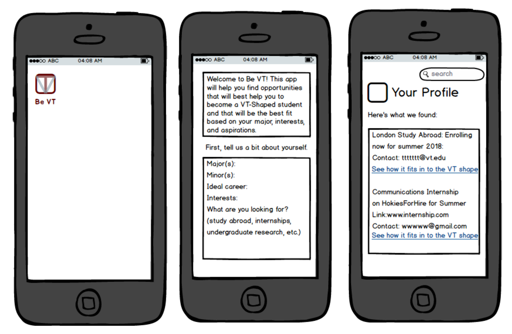
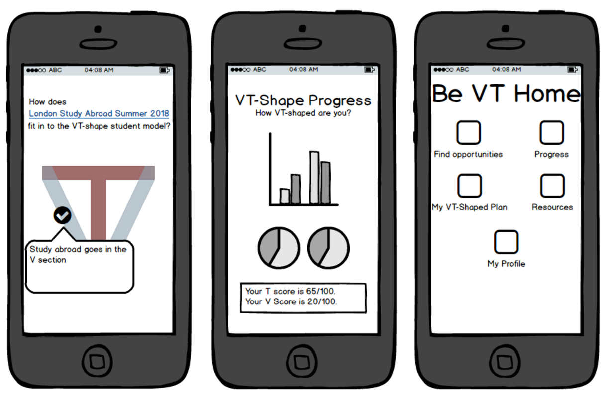

Design
This is my affirmative design supporting the VT-shaped student model.

My design idea comes from the challenges I have observed that students face pertaining to the VT-shape model. I think the idea of the VT-shaped student is a vital one, so this design is meant to improve upon, capitalize on, and help make it more accessible to students.
The first image is just what the app would look like on the home page of an iPhone. The second image shows what a student would see when first entering the "Be VT" app. They would enter information that will help the system find a variety of different opportunities that fit in to the VT-shape. This app would take information and potential opportunities for students from a variety of campus resources such as the Global Education Office, HokiesForHire, and Career Services. Only relevant opportunities would be shown, and the opportunities the student would receive would be based on the information (major, interests, etc.) that the student enters. The third photo shows what the results of the student's entries may look like. The results would have external links to more information as well as contact information for relevant faculty.
The fourth image shows the screen that the student would see if they clicked on the link in the third photo that reads "see how it fits into the VT shape." This way, students could visualize and better understand the relevance of each opportunity. The fifth (middle) image shows a diagnosis, sort of like a DARS report on HokieSpa, that students could run to see where they need more VT-shaped experiences as well as what they have already compelted. The last image shows the home screen within the app. "Find opportunities" would lead to where students can put in information and receive results, and "Progress" would lead to the report in the last image. The "plan" icon would lead to a screen where the student could make a plan of different experiences to help become a more VT-shaped student over the course of their college career. The "resources" icon would lead the student to a variety of helpful resources, from advisors, to study abroad faculty leaders, to the staff at Career Services on campus. The last icon would lead to the student's personal profile, where they could see the information they have put in such as their major and their interests.
I believe that many students struggle with finding the right opportunities for their education and career goals, and once they find such opportunities, they struggle with fitting them in to their jam-packed 4 year college plan. This app would help students filter through all the opportunities at our university in order to find ones that are a good fit for them. The app will also help students fit these experiences in to their schedules, as it allows them to think ahead and plan for them. It will also help students to visualize what it means to be a VT-shaped student and how their involvement on and off campus fits in to that model.